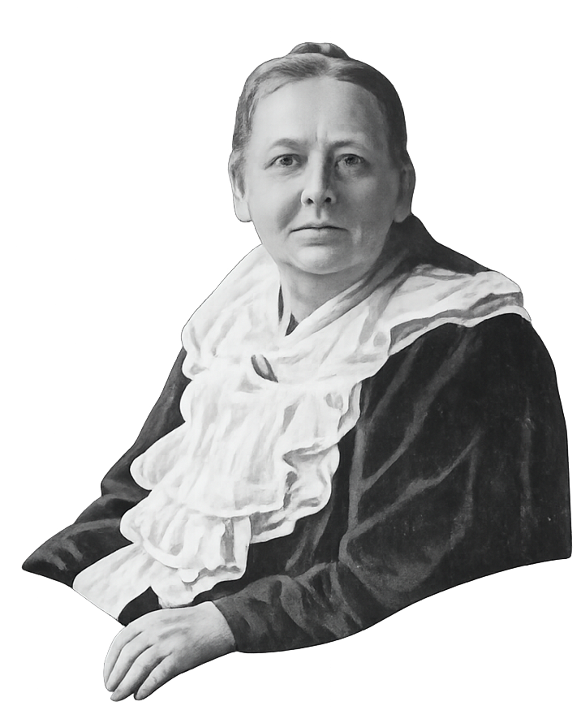
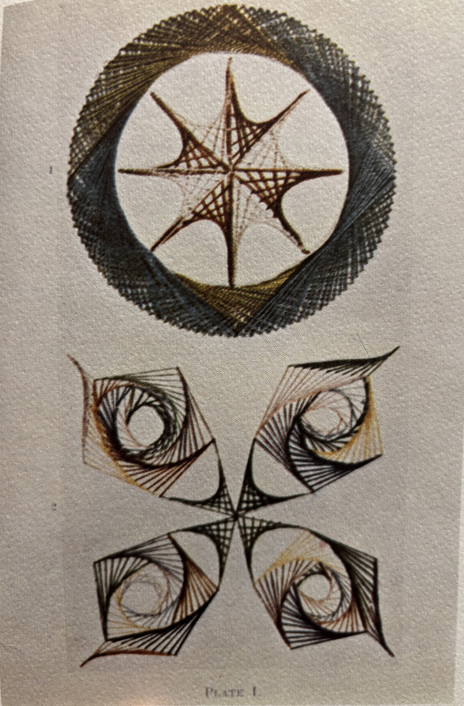
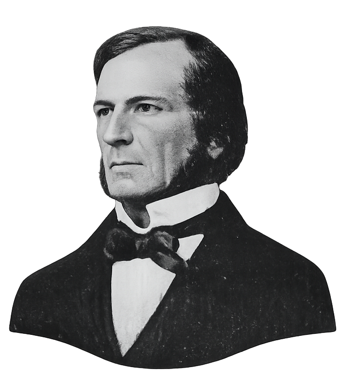

The art of curve stitching was invented by Mary Everest Boole, a brilliant amateur mathematician who was born nearly 200 years ago.
In her own time, Mary taught children to stitch curves in paper cards, using straight lines of thread:

Mary invented this beautiful art as a way of teaching math to children through play. The beauty and function of curve stitcing are best described by Mary herself, who calls this art:
"a means of introducing little children to the conception of a connexion between organic thought-sequence and the evolution of harmonious form. The child draws straight lines which represent to the mind the successive desires and thoughts of animals; which express his own understanding of and sympathy with those desires and thoughts.
While he is doing this, a graceful curve, such as he has perhaps never before seen or imagined, grows up under his hands, as if by miracle; he at first hardly realizes how or why it came into being. After a little practice of this kind, the connexion between Laws of thought And Laws of form passes out of the category of things which need to be proved and becomes axiomatic; he knows it, as he knows that things which are equal to the same are equal to each other."
- Mary Everest Boole, Preface to "A Rhythmic Approach to Mathematics".
Mary was also the wife of famous mathematician George Boole, with whom she explored many fascinating ideas, and whose mathematical discoveries enabled apps, including this one, to eventually be created.

In her writing, Mary even draws connections between the laws of thought, as revealed by curve stitching, and as symbolized using the "Boolean Logic" famously developed by her husband, which remains in use today in all computer programs.